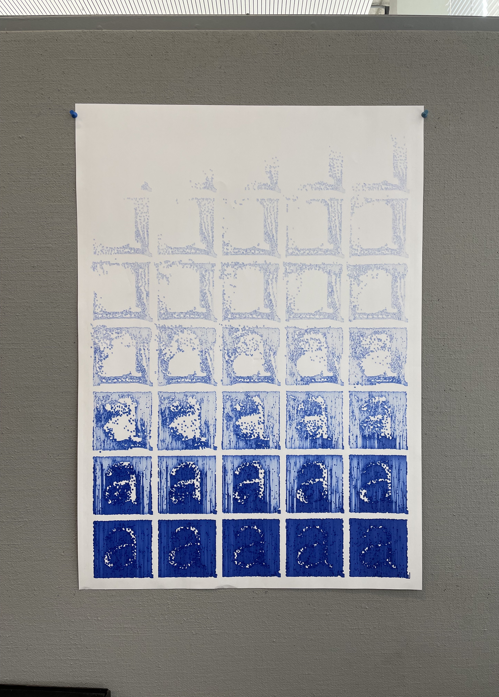
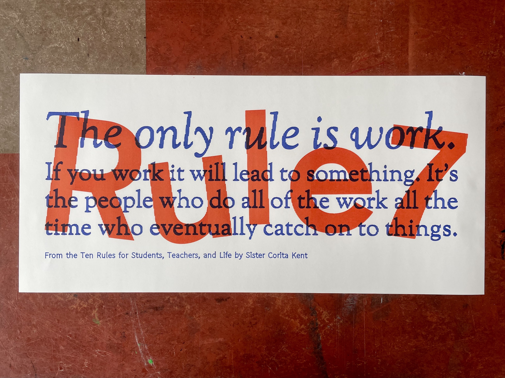
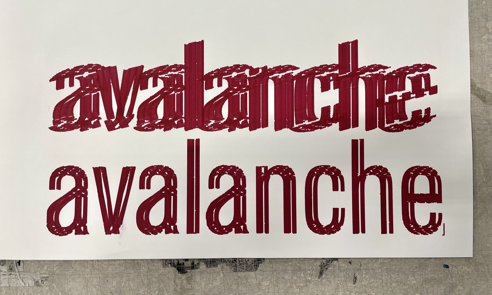

Most of the time I'm working with experimental typography and printing, identity design, and book design. This I do for clients or by myself. I'm currently studying BA Graphic Design at ArtEZ Arnhem.
Lately, I have been using a pen plotter to make experimental posters playing around with image and typography. The pen plotter can create interesting textures that can't be created with other printing techniques. If you're interested in one, send me an e-mail!